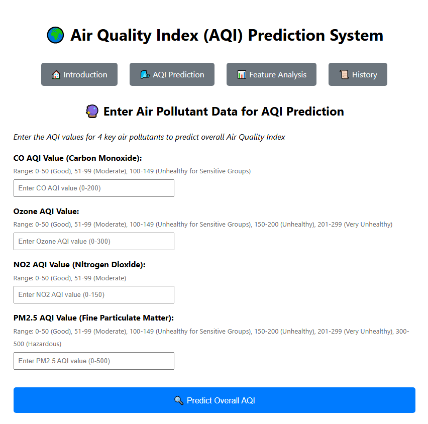
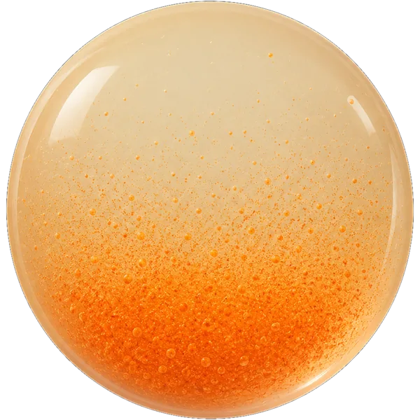
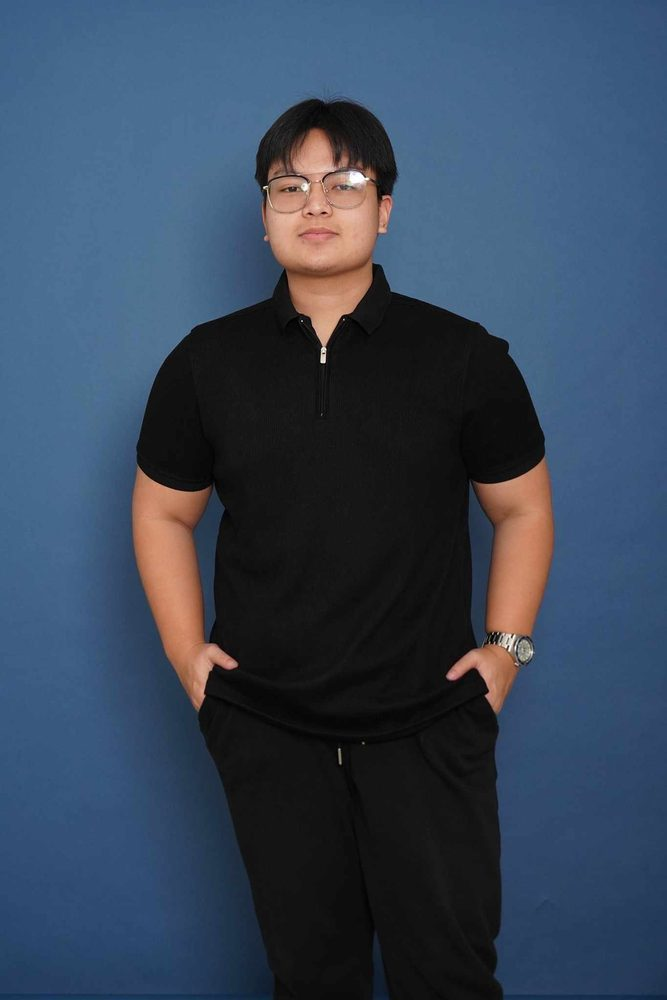
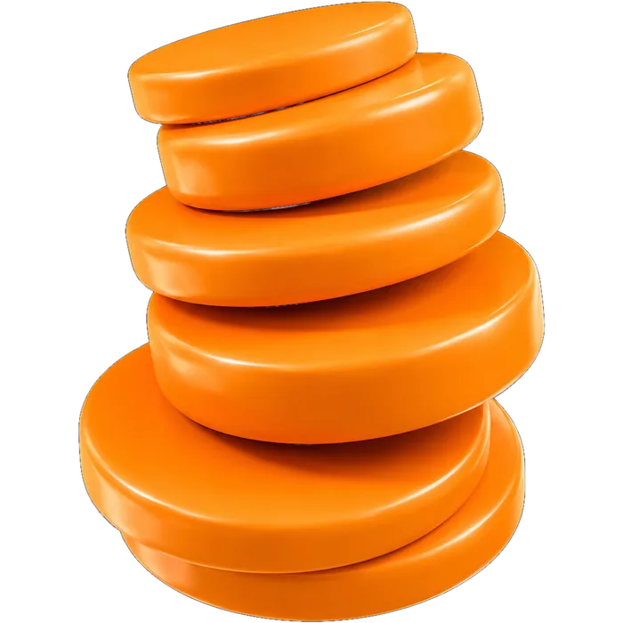
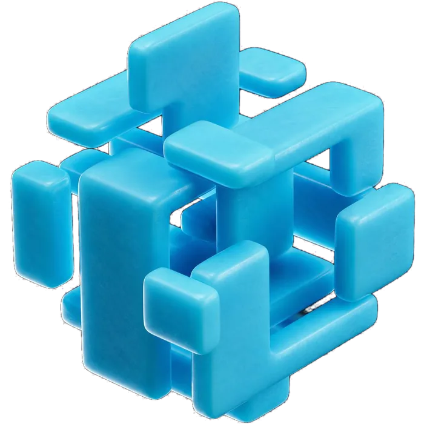
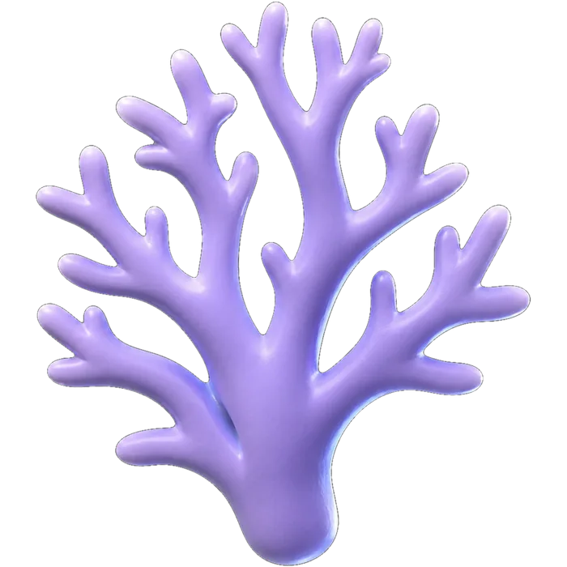
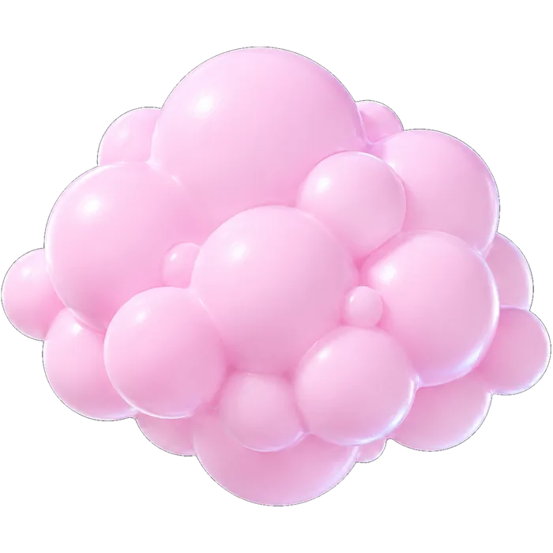
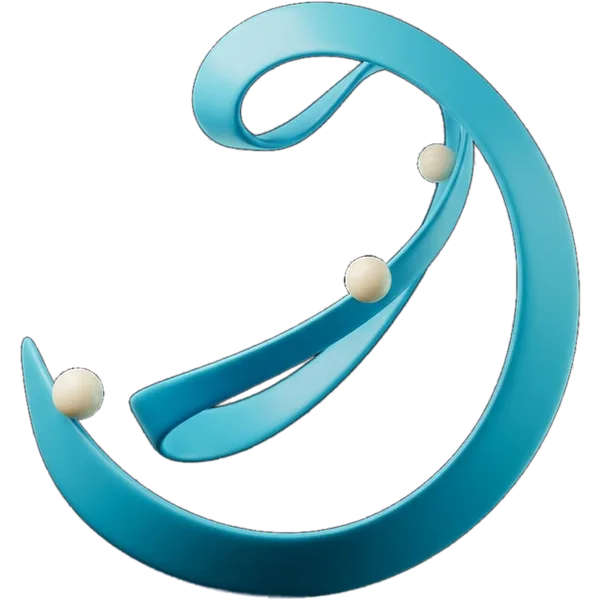
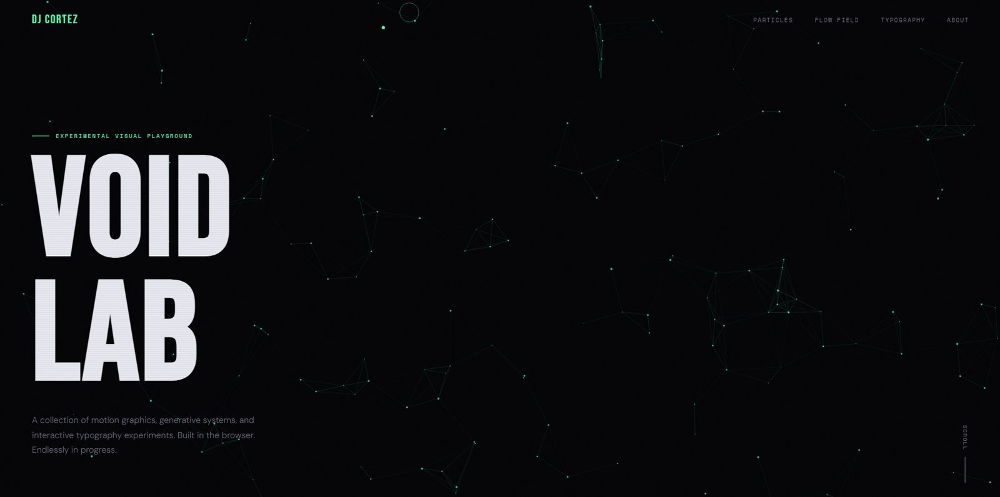

{ 01 }
Data & Analytics
Live demo ↗


AQI Prediction
A Python Flask MVC web application that predicts air quality and makes the result easy to explore in a deployed web experience.
Data Science & Analytics — Mapúa Malayan Colleges Laguna
I turn operational workflows into clear, reliable systems — and messy data into things people can actually decide from.
01 — about
I'm a fourth-year Computer Science student specialising in Data Science and Analytics. Most of my work sits where analysis meets software — practical, data-driven applications and full-stack tools that turn operational workflows into clear, reliable systems.
I spent 480 hours inside a semiconductor operations department digitising a reporting process that had lived in spreadsheets for years. That taught me more about requirements, constraints and stakeholder review than any coursework did.
Open to opportunities

02 — disciplines

Data & Analytics
Cleaning, exploring and modelling real datasets, then presenting the result so a non-technical reader can act on it.

Languages & Interfaces
Building the thing end to end — the model, the API around it, and the interface someone actually uses.

Data Systems
Designing storage that holds up once real users, real edge cases and real history arrive.

Tooling & AI
Using the current generation of tooling deliberately — to accelerate the work, not to outsource the thinking.
03 — experience
During a 480-hour onsite practicum in B2F2 Operations 2/3 at STMicroelectronics, I designed and built an internal web application that digitises the department's MBO sawing-report process. I contributed across the full stack — frontend, backend, database, testing, documentation, and a deployment presentation to stakeholders.
Challenge
Manual Excel reporting depended on file handling and individual practices, making validation, retrieval and workflow consistency difficult.
Solution
Translated the worksheet logic into a login-protected, workflow-based application with guided forms, validation and admin-managed configuration.
Impact
Created a centralised way to save and retrieve reports, standardise report preparation and reduce dependence on isolated local files.
key contributions
stack
public-safe overview
Internal system: source code, operational data and detailed workflows remain confidential.
04 — work


A Python Flask MVC web application that predicts air quality and makes the result easy to explore in a deployed web experience.

A Python data-analysis project that explores airfare trends and uses machine learning to examine the patterns behind flight prices.

An experimental visual playground for browser-based motion graphics, generative systems and interactive typography explorations.
05 — credentials
06 — contact
Open to internships, freelance work, or full-time roles in data science, analytics or software development.